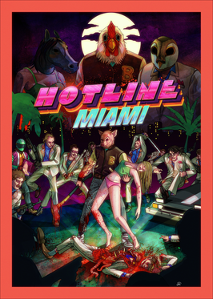

Action · 2012
Hotline Miami
Neon, synths, and one-hit kills in both directions; a game about the mask.

Cover: Wikipedia: Hotline Miami
Facts
- Released
- 2012-10-23
- Genre
- Action
- Category
- Action
- Platforms
- Mobile, PC, PlayStation, Xbox
- Developers
- Dennaton Games
- Publishers
- Devolver Digital
PC requirements
- Minimum
- [object Object]
- Recommended
- [object Object]